Etapa 8 • refino das telas 06, 07 e 08
Capturas em 1440 × 900, salvo indicação. "Antes" é a versão entregue na rodada anterior; "agora" é o refino pedido.
06 Adaptação • sem a diagonal; os quatro pilares sempre visíveis
A moldura aramada do 3D (a linha diagonal) foi removida. As duas cenas foram mantidas para preservar as 30 cenas, mas agora os quatro pilares aparecem juntos: cena 1 abre comunicação (idioma e formatos), cena 2 abre decisão e conformidade, que preparam a tela 07. Clicar num pilar recolhido abre a cena dele.

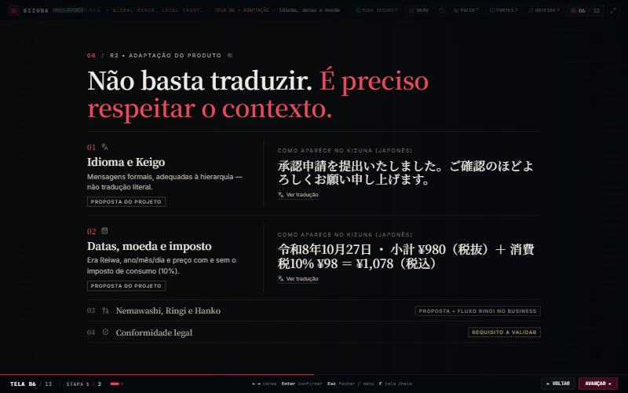

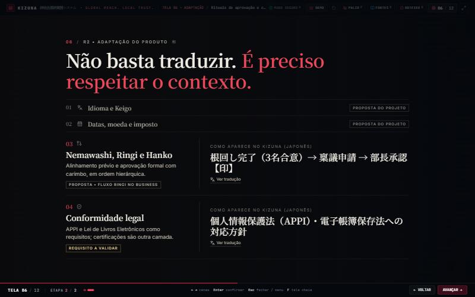
07 Confiança • torii estilizado e Hanko evidente
As barras grossas deram lugar a um torii: duas colunas finas, viga superior escura com pontas erguidas, viga e travessa vermelhas. O painel de decisão fica pendurado sob as vigas. O espaço do carimbo aparece vazio e tracejado ("Aguardando o carimbo") até o clique; depois, o Hanko vermelho 承認. Só o clique com o ponteiro aprova: setas, Enter e Espaço nunca aprovam.

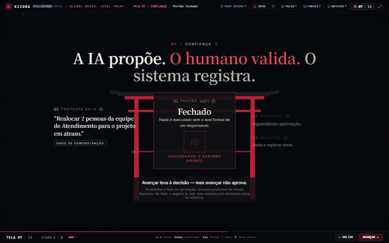
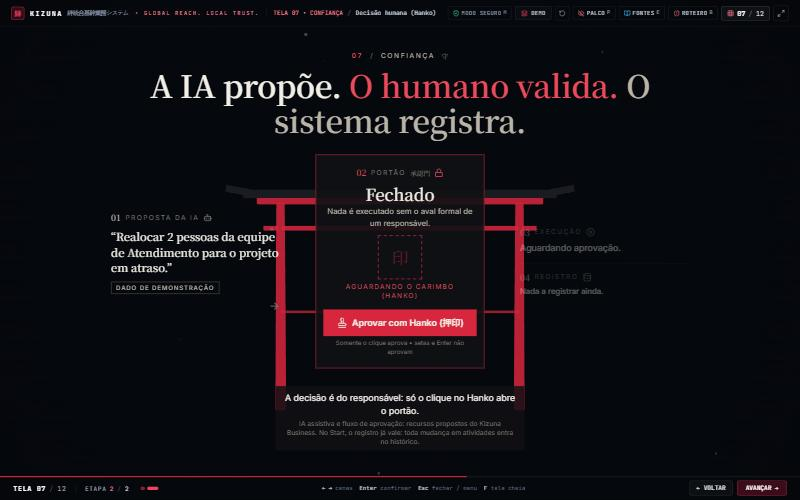
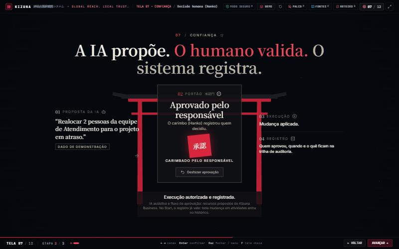
08 Planos • anéis progressivos e a conta da receita
Ao escolher um plano, os anéis acendem em sequência de dentro para fora até ele (Business inclui Start; Enterprise inclui os três), o anel escolhido cresce levemente e o escopo atualiza ao mesmo tempo. No 3D, os cubos saíram; três anéis finos no piso acendem em onda de dentro para fora. Na cena 2, a conta fica explícita: usuários × preço = MRR; × 12 = ARR; e a receita recorrente separada do que é cobrado à parte, sob proposta.

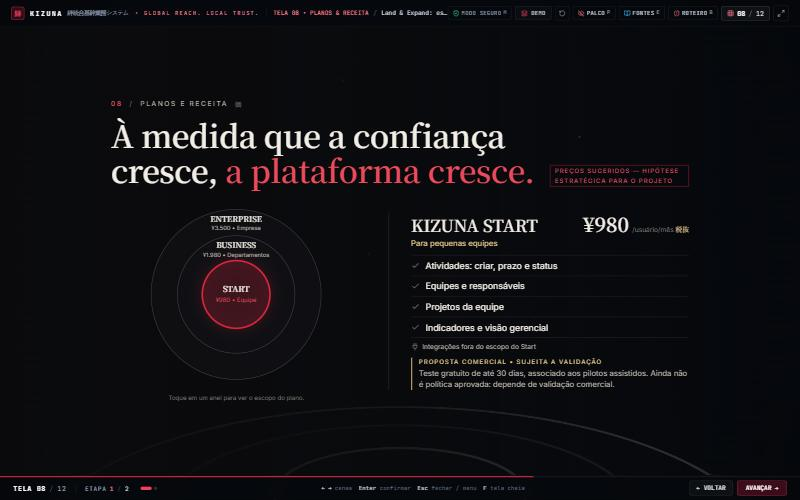
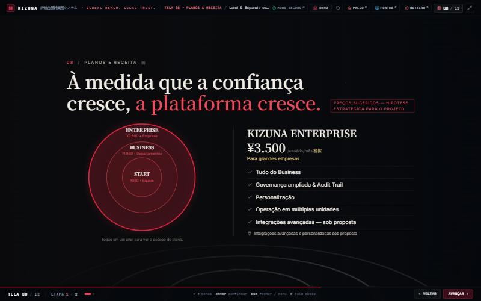
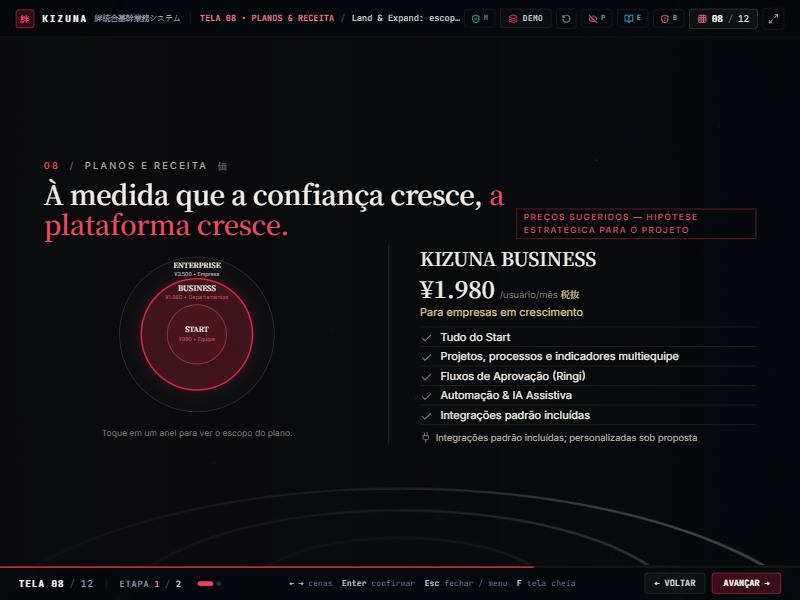

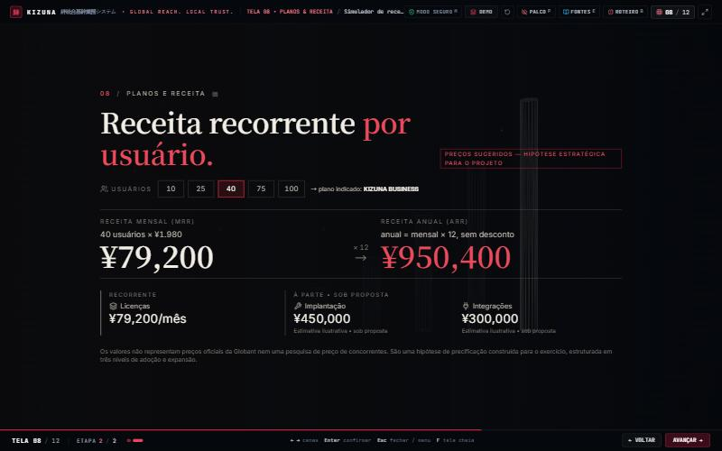
800 × 600
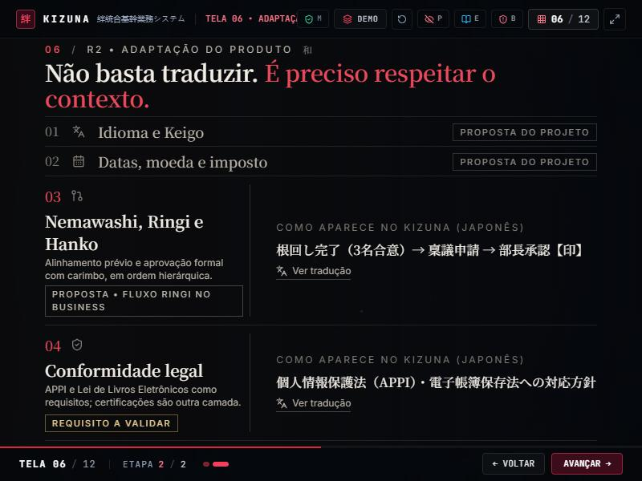
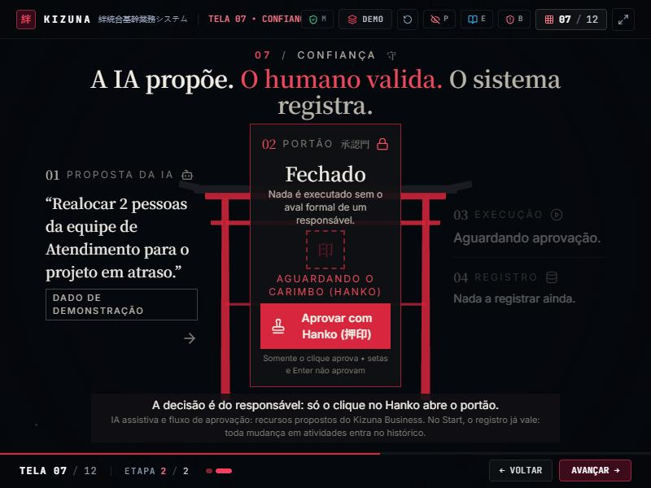
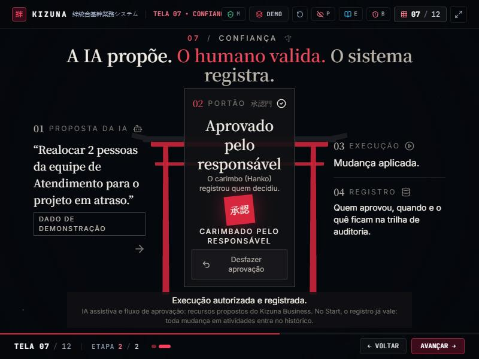